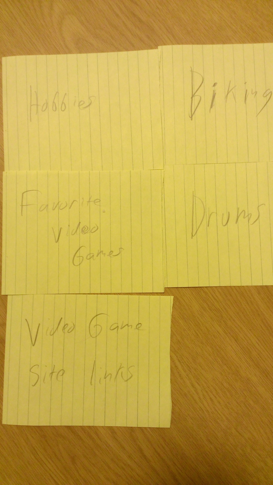

The cards in this sort are for a personal website I plan on making. I have already put in a tiny bit of work into it earlier this semester just for fun but now I have a better idea of what I want to make and how I want to organize it. I had only thought to put the content in two sections so my sort was rather simple. My mother and Rachel split the cards into three groups but had different content for hobbies and about me groups. My brothers sort seems a bit weird to me but with 5 different groups it would spread all my content out more and I could expand on each more.
|  |